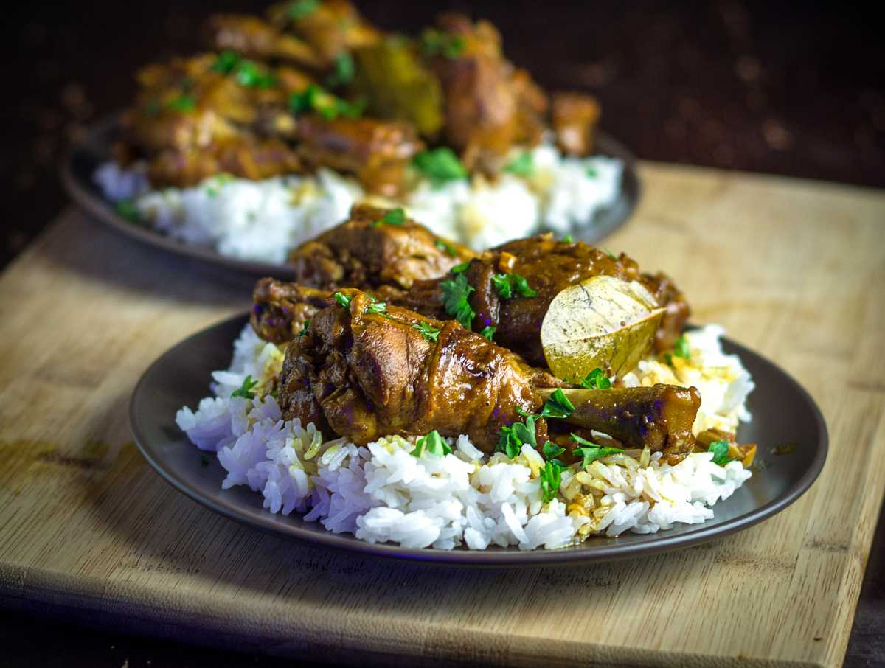
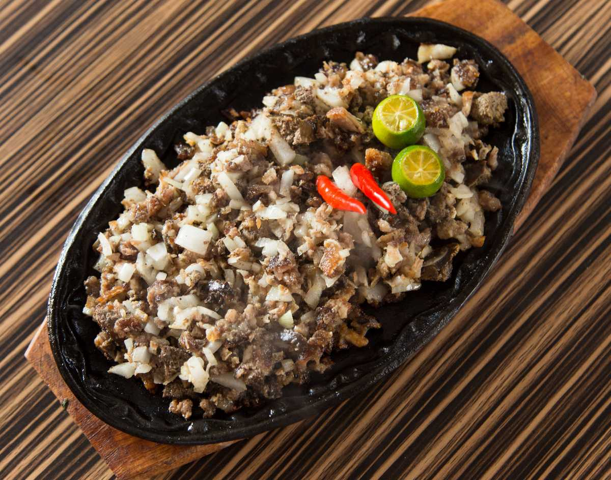
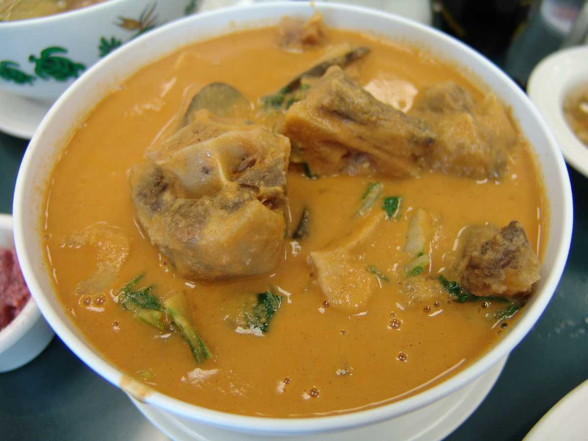
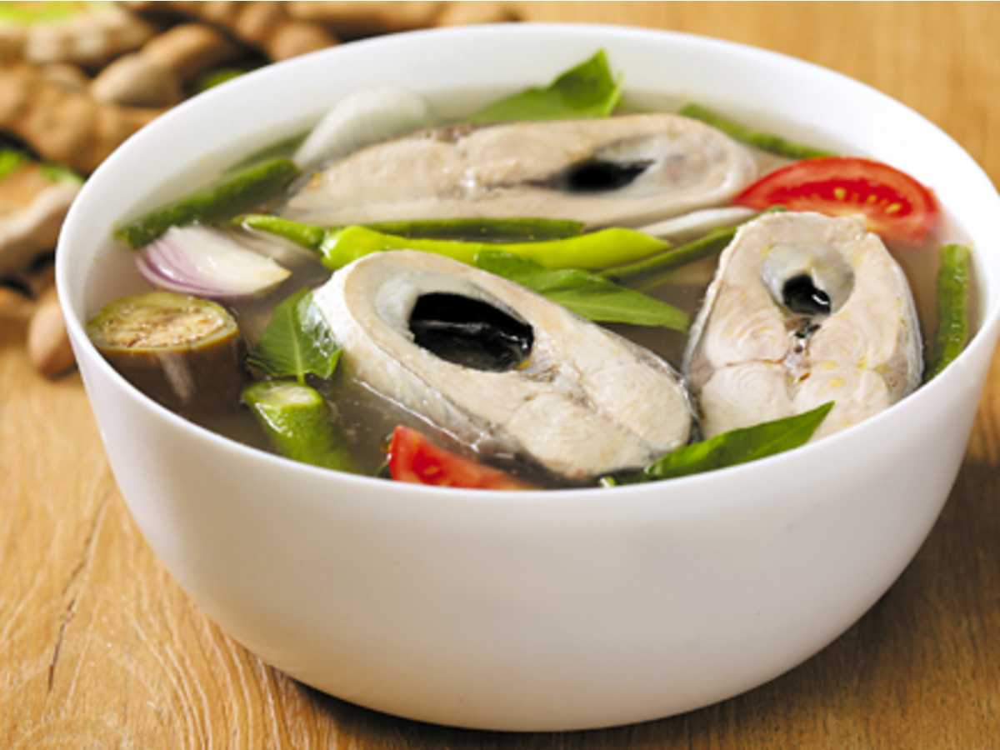
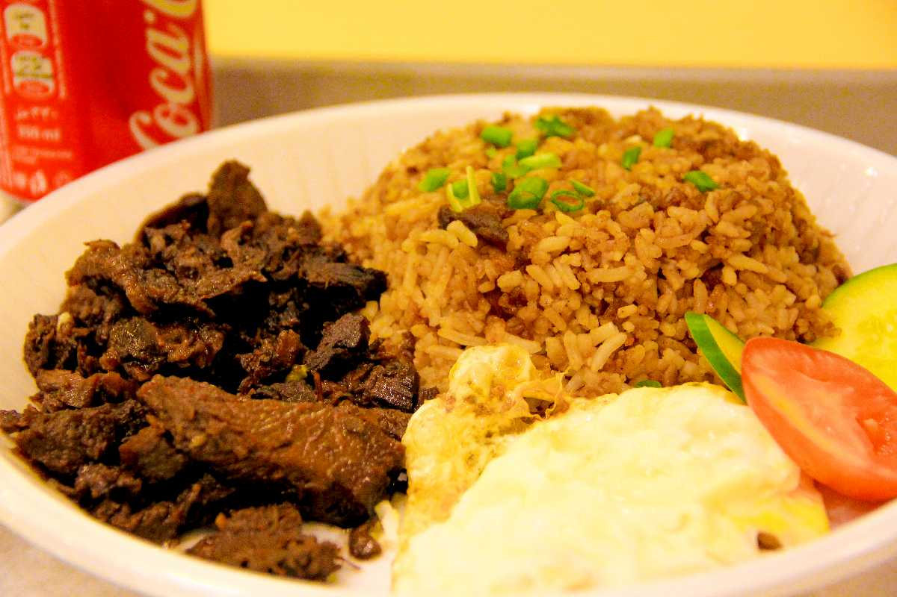

Any trip is incomplete without the Food, right? You cannot really have a perfect trip without exploring the local street food of that place. Manila, in the Philippines, is home to one of the best street foods in Asia. The authentic street style food made with exotic spices and herbs is gonna make you drool. The dishes here are mostly boiled, fried and seasoned with salt, peppers, soy sauce, garlic, etc.

Banana Cue
Often mixed with the Turon, a Banana Cue is a little different. This is a sweet dish, which you may have like a dessert. Banana slices fried in brown caramelized sugar is a very common staple food in the Philippines.

Kwek Kwek
Kwek kwek sounds like something related to a chicken dish but actually isn't. Kwek Kwek are quail eggs covered with an orange layer or gram flour layer and are deep-fried in hot oil. They somewhat look like cheese nuggets. This dish is served with either vinegar or onions and chilli flakes.

Green Mango Shrimp
Didn’t your mouth just water by thinking of Green Mango? Mine did! The street vendors sell the green mangoes (typically from India) by peeling and poking it into a stick. It is seasoned with either salt or a slightly sweet and spicy shrimp paste. The sour mango with the mildly spicy paste is a must-try.

Adobo
Adobo is arguably the most demanded Filipino meal. It is made with marinating chicken or pork. This dish is seasoned along with marinated soy sauce, vinegar and garlic. The dish also includes vegetables and beans.

Sisig
Sisig is made with the parts of pig’s head and chicken liver. It is a mixture of both. Usually seasoned with peppers, onions and spices. The dish tastes better when served with soy sauce.

Kare-Kare
Kare-Kare is a Filipino Gravy dish cooked with either pork or seafood. The gravy is made with thick sour peanut sauce and vegetables. It is usually served with rice or noodles. This dish is also famous during Filipino celebrations.

Crispy Pork
Crispy Pork is a pork leg dish, which is first boiled then deep-fried until it turns brown and crispy. This dish is served with soy or vinegar dip. You will have to try it !

Sinigang
Sinigang is a broth/ soup dish which has a little sour taste because it consists of tamarind. This soup is made with various meats like, fish, chicken, shrimp, pork, etc. The dish is cooked with tomatoes, onions, carrots and other vegetables.

Tapsilog
Tapsilog is a meal often served for dinner. It consists of fried beef (Tapa) or mutton, fried garlic rice and egg fry. This dish is seasoned with salt and spices. If you like strong spicy food then it should be your pick.